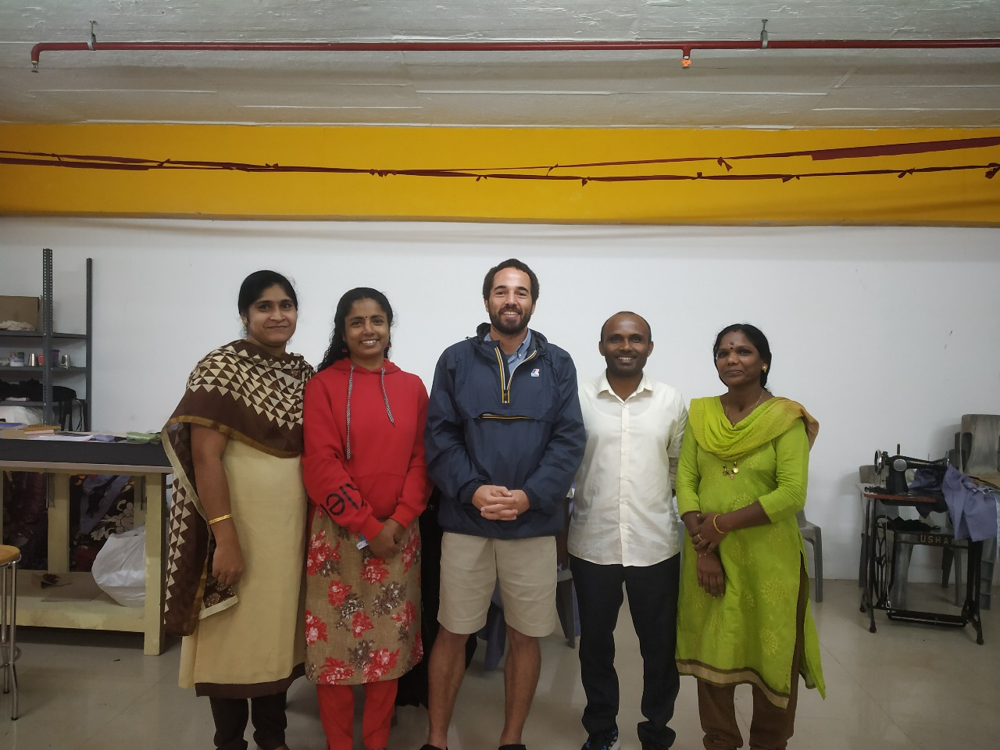
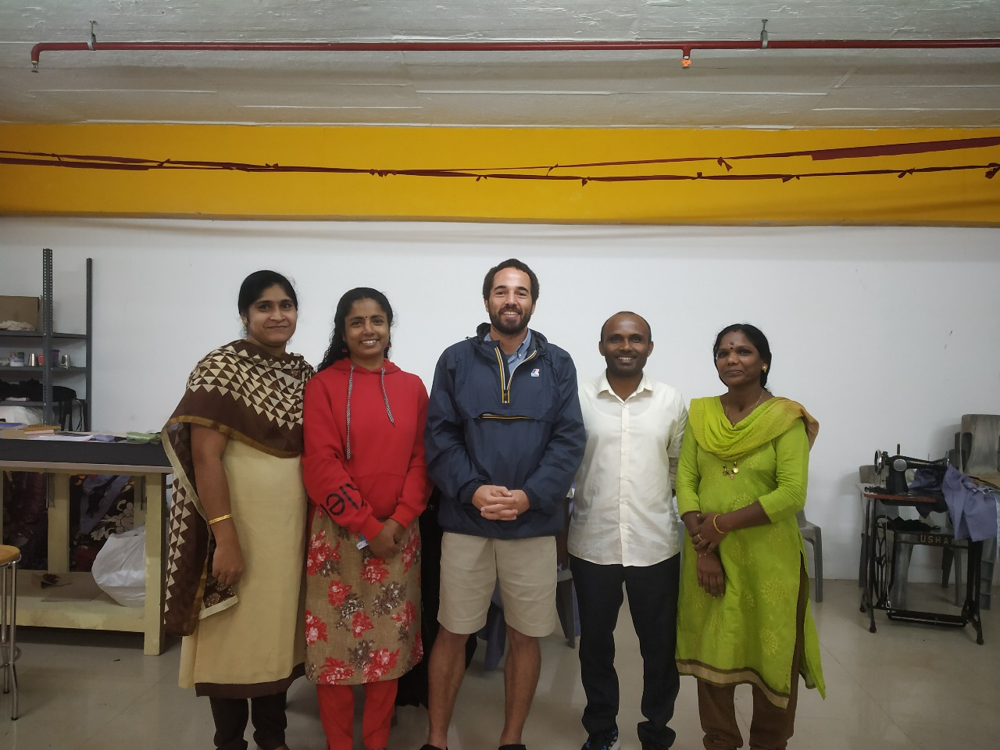

1. Livelihood Intervention Programme

Goal: Empowering women through tailoring and dress designing training
Target group:Women from middle-class working families in tea estate areas
Impact:
- 69 women trained in tailoring, embroidery, financial management, and marketing.
- 8 women fully employed in the Tendrils Production Unit, generating an annual turnover of ₹6 lakh.
- Improved self-esteem, financial independence, and societal acceptance.
2. Marian Community Wellness Center


A collaboration with Mental Health Action Trust (MHAT), Kozhikode, to enhance mental health services in Idukki district.
Impact:
- 150+ home visits conducted to support mental health patients.
- Sensitization programs conducted with ASHA workers and local government officials.
- Expanded coverage from Peermade and Peruvanthanam to Elappara Panchayat.
3. International Volunteering & Cross-Cultural Learning
 


The France Volontaires Program offers students a 7-month international volunteership, fully sponsored by the French Government.
Impact:
- French volunteers engaged in community development and environmental education.
- Jessica Lopez (MSW Student) selected for an international volunteership in Corsica, France.
4. Class Outreach Activities


Tuberculosis Awareness & Prevention Program - Educating the community on TB symptoms and prevention.
Mega Cleaning Drive at Vagamon – NSS and NCC volunteers promoted environmental conservation.
Impact:
- Raised public health awareness and encouraged environmental responsibility.
5. National Seminars & Cultural Performances
Workshop on Indian Knowledge Systems – Exploring indigenous traditions.
Cultural Fest (NATYA) – Featuring performances from 11 Indian states.
Eminent Speakers Series – Hosted talks by notable figures like Michael Vetha Siromoney IAS.
Impact:
- Promoted cultural preservation, academic learning, and leadership.
6. Community Development & Student Engagement

Rural Camp – Students participated in road construction, anganwadi maintenance, and bus stop construction.
Kozhimala Livelihood Project – Implementing sustainable income opportunities through community-based initiatives.
Impact:
- Provided practical experience in rural development.
- Expanded coverage from Peermade and Peruvanthanam to Elappara Panchayat.
7. Sahya Community Fest
.jpg)
.jpeg)
.jpeg)
Suchitwa Parliament – Raised awareness on parliamentary functions.
Medical Camp– Focused on cancer awareness and treatment for women.
Agriculture Exhibition – Organized by Cardamom Research Station, Pampadumpara.
Impact:
- Encouraged civic engagement and public health awareness.
- Promoted sustainable agricultural practices.